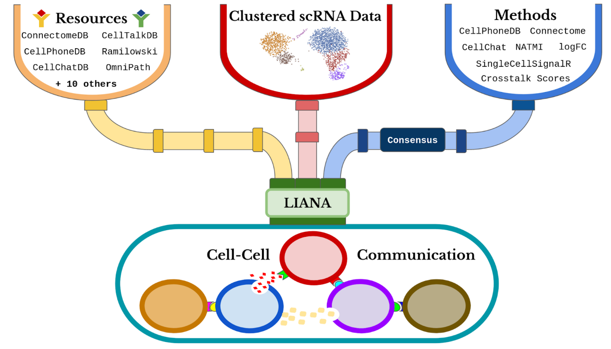
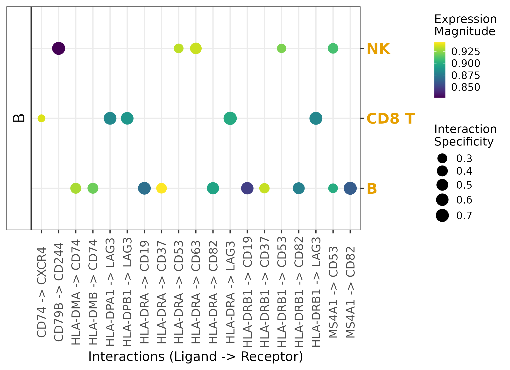
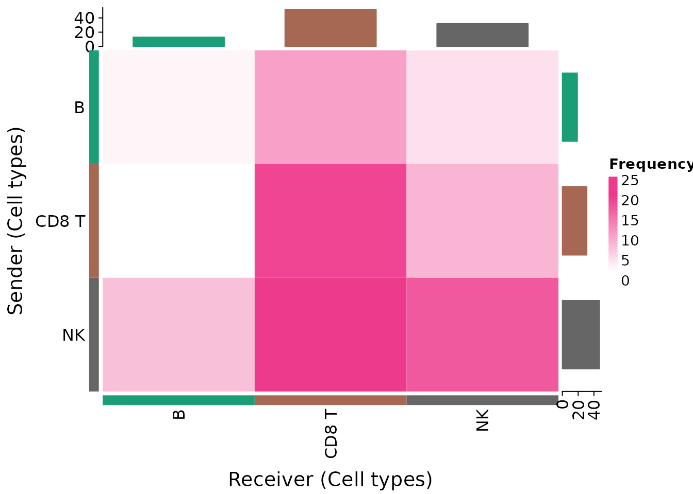
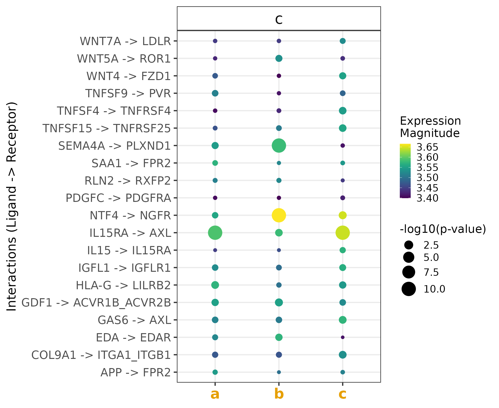

LIANA Tutorial
Daniel Dimitrov
Saezlab, Heidelberg Universitydaniel.dimitrov@uni-heidelberg.de
2022-07-04
Source:vignettes/liana_tutorial.Rmd
liana_tutorial.Rmd
liana: Intro
The continuous developments of single-cell RNA-Seq (scRNA-Seq) have sparked an immense interest in understanding intercellular crosstalk. Multiple tools and resources that aid the investigation of cell-cell communication (CCC) were published recently. However, these methods and resources are usually in a fixed combination of a tool and its corresponding resource, but in principle any resource could be combined with any method.
To this end, we built liana - a framework to decouple the tools from their corresponding resources.

CCC Resources
liana provides CCC resources obtained and formatted via OmnipathR which are then converted to the appropriate format to each method.
# Resource currently included in OmniPathR (and hence `liana`) include:
show_resources()
#> [1] "Default" "Consensus" "Baccin2019" "CellCall"
#> [5] "CellChatDB" "Cellinker" "CellPhoneDB" "CellTalkDB"
#> [9] "connectomeDB2020" "EMBRACE" "Guide2Pharma" "HPMR"
#> [13] "ICELLNET" "iTALK" "Kirouac2010" "LRdb"
#> [17] "Ramilowski2015" "OmniPath"
# A list of resources can be obtained using the `select_resource()` function:
# See `?select_resource()` documentation for further information.
# select_resource(c('OmniPath')) %>% dplyr::glimpse() CCC Methods
Each of the resources can then be run with any of the following methods:
# Resource currently included in OmniPathR (and hence `liana`) include:
show_methods()
#> [1] "connectome" "logfc" "natmi" "sca"
#> [5] "cellphonedb" "cytotalk" "call_squidpy" "call_cellchat"
#> [9] "call_connectome" "call_sca" "call_italk" "call_natmi"Note that the different algorithms (or scoring measures) used in sca, natmi, connectome, cellphonedb, cytotalk’s crosstalk scores, and logfc were re-implemented in LIANA. Yet, the original method pipelines can be called via the call_* functions.
liana wrapper function
To run liana, we will use a down-sampled toy HUMAN PBMCs scRNA-Seq data set, obtained from SeuratData.
liana takes Seurat and SingleCellExperiment objects as input, containing processed counts and clustered cells.
liana_path <- system.file(package = "liana")
testdata <-
readRDS(file.path(liana_path , "testdata", "input", "testdata.rds"))
testdata %>% dplyr::glimpse()
#> Formal class 'Seurat' [package "SeuratObject"] with 13 slots
#> ..@ assays :List of 1
#> .. ..$ RNA:Formal class 'Assay' [package "Seurat"] with 8 slots
#> ..@ meta.data :'data.frame': 90 obs. of 4 variables:
#> .. ..$ orig.ident : Factor w/ 1 level "pbmc3k": 1 1 1 1 1 1 1 1 1 1 ...
#> .. ..$ nCount_RNA : num [1:90] 4903 3914 4973 3281 2641 ...
#> .. ..$ nFeature_RNA : int [1:90] 1352 1112 1445 1015 928 937 899 1713 960 888 ...
#> .. ..$ seurat_annotations: Factor w/ 3 levels "B","CD8 T","NK": 1 1 1 1 3 3 1 1 1 1 ...
#> ..@ active.assay: chr "RNA"
#> ..@ active.ident: Factor w/ 3 levels "B","CD8 T","NK": 1 1 1 1 3 3 1 1 1 1 ...
#> .. ..- attr(*, "names")= chr [1:90] "AAACATTGAGCTAC" "AAACTTGAAAAACG" "AAAGGCCTGTCTAG" "AAAGTTTGGGGTGA" ...
#> ..@ graphs : list()
#> ..@ neighbors : list()
#> ..@ reductions : list()
#> ..@ images : list()
#> ..@ project.name: chr "SeuratProject"
#> ..@ misc : list()
#> ..@ version :Classes 'package_version', 'numeric_version' hidden list of 1
#> .. ..$ : int [1:3] 3 2 3
#> ..@ commands :List of 2
#> .. ..$ FindVariableFeatures.RNA:Formal class 'SeuratCommand' [package "Seurat"] with 5 slots
#> .. ..$ NormalizeData.RNA :Formal class 'SeuratCommand' [package "SeuratObject"] with 5 slots
#> ..@ tools : list()liana_wrap calls a number of methods and and each method is run with the provided resource(s).
We will now call all methods that are currently available in liana.
Here we use only the Consensus (Default) CCC resource, but any of the aforementioned ones (available via show_resources()) can be added to the resource parameter
# Run liana
liana_test <- liana_wrap(testdata)
#> Warning in exec(output, ...): 3465 genes and/or 0 cells were removed as they had
#> no counts!
#> Warning: `invoke()` is deprecated as of rlang 0.4.0.
#> Please use `exec()` or `inject()` instead.
#> This warning is displayed once per session.
# Liana returns a list of results, each element of which corresponds to a method
liana_test %>% dplyr::glimpse()LIANA currently provides a mixture of re-implemented methods and pipelines which externally call specific LR methods. By default, LIANA will call only the internal scoring function, i.e. those that are re-implemented in LIANA.
One can use LIANA to also run the original methods. For more about the original methods see LIANA++.
Aggregate and Obiain Consensus Ranks
liana also provides consensus ranks for the results obtained using different methods. By default, liana will provide mean, median, and aggregate* consensus ranks
# We can aggregate these results into a tibble with consensus ranks
liana_test <- liana_test %>%
liana_aggregate()
#> Now aggregating natmi
#> Now aggregating connectome
#> Now aggregating logfc
#> Now aggregating sca
#> Now aggregating cellphonedb
#> Aggregating Ranks
dplyr::glimpse(liana_test)
#> Rows: 811
#> Columns: 16
#> $ source <chr> "B", "B", "B", "B", "B", "B", "NK", "NK", "B", …
#> $ target <chr> "CD8 T", "CD8 T", "CD8 T", "CD8 T", "CD8 T", "C…
#> $ ligand.complex <chr> "HLA-DQA1", "HLA-DRA", "HLA-DQA2", "HLA-DRB1", …
#> $ receptor.complex <chr> "LAG3", "LAG3", "LAG3", "LAG3", "LAG3", "LAG3",…
#> $ aggregate_rank <dbl> 7.471186e-07, 5.418542e-06, 7.390164e-06, 1.100…
#> $ mean_rank <dbl> 23.2, 12.4, 41.8, 21.4, 31.8, 18.6, 35.0, 13.8,…
#> $ natmi.edge_specificity <dbl> 0.8945477, 0.7374111, 0.9665280, 0.6819579, 0.8…
#> $ natmi.rank <dbl> 2, 7, 1, 10, 5, 12, 69, 20, 11, 8, 4, 29, 104, …
#> $ connectome.weight_sc <dbl> 1.0054344, 1.0097786, 0.9046471, 0.9328151, 0.9…
#> $ connectome.rank <dbl> 2, 1, 6, 3, 7, 5, 19, 8, 4, 9, 22, 21, 13, 39, …
#> $ logfc.logfc_comb <dbl> 2.4495727, 2.7106868, 2.0545938, 2.1860017, 2.2…
#> $ logfc.rank <dbl> 2, 1, 8, 7, 4, 6, 52, 3, 5, 9, 31, 61, 23, 14, …
#> $ sca.LRscore <dbl> 0.8693937, 0.8985606, 0.8343680, 0.8815981, 0.8…
#> $ sca.rank <dbl> 109, 52, 193, 86, 142, 69, 34, 37, 80, 132, 432…
#> $ cellphonedb.pvalue <dbl> 0, 0, 0, 0, 0, 0, 0, 0, 0, 0, 0, 0, 0, 0, 0, 0,…
#> $ cellphonedb.rank <dbl> 1, 1, 1, 1, 1, 1, 1, 1, 1, 1, 1, 1, 1, 1, 1, 1,…Voila! That’s it. A very brief intro to LIANA and how to obtain the scoring functions† for each method implemented in it, as well as an aggregate_rank* which serves as a consensus across methods.
(†) Note that here we focus on the scores recommended to be used to prioritize interaction in a single sample system. Most of these, with the exception of SingleCellSignalR’s LRscore, take the specificity of the cluster pair into account.
(*) The aggregate consensus rank (aggregate_rank) is obtained using a re-implementation of the RRA method from the RobustRankAggreg package.
RRA scores can be interpreted as p-values and interactions which are ranked consistently higher than random are assigned low scores/p-values.
Simple DotPlot
We will now plot the results. By default, we use the LRscore from SingleCellSignalR to represent the magnitude of expression of the ligand and receptor, and NATMI’s specificity weights to show how specific a given interaction is to the source(L) and target(R) cell types.
In this case, we plot the top 25 interactions with the lowest aggregate_rank scores, and we plot interactions in which B cells are the source (express the ~ligands) and the other 3 cell types in this toy dataset are the target (express the ~receptors).
liana_test %>%
dplyr::filter(source =="B") %>%
dplyr::top_n(25, desc(aggregate_rank)) %>%
liana_dotplot(source_groups = c("B"),
target_groups = c("NK", "CD8 T", "B"))
Note that missing dots are interactions which are not expressed in at least 10% of the cells (by default) in both cell clusters.
In this case, we consider the specificity of interactions as defined by NATMI’s edge specificity weights. NATMI’s specificity edges range from 0 to 1, where 1 means both the ligand and receptor are uniquely expressed in a given pair of cells. Expression magnitude, represented by SingleCellExperiment’s LRScore, is on the other hand, meant to represent a non-negative regularized score, comparable between datasets.
Frequency Heatmap
We will now plot the frequencies of interactions for each pair of potentially communicating cell types.
This heatmap was inspired by CellChat’s and CellPhoneDB’s heatmap designs.
First, we filter interactions by aggregate_rank, which can itself be treated as a p-value of for the robustly, highly ranked interactions. Nevertheless, one can also filter according to CPDB’s p-value (<=0.05) or SingleCellExperiments LRScore, etc.
liana_trunc <- liana_test %>%
# only keep interactions concordant between methods
filter(aggregate_rank <= 0.01) # this can be FDR-corr if n is too high
heat_freq(liana_trunc)
Here, we see that NK-CD8 T share a relatively large number of the inferred interactions, with many of those being send from NK - note large sum of interactions (gray barplot) in which NK is the Sender.
NB! Here, an assumption is implied that the number of interactions inferred between cell types is informative of the communication events occurring in the system. This is a rather strong assumption that one should consider prior to making any conclusions. Our suggestion is that any conclusions should be complimented with further information, such as biological prior knowledge, spatial information, etc.
Frequency Chord diagram
Here, we will generate a chord diagram equivalent to the frequencies heatmap.
First, make sure you have the circlize package installed.
if(!require("circlize")){
install.packages("circlize", quiet = TRUE, repos = "http://cran.us.r-project.org")
}
#> Loading required package: circlize
#> ========================================
#> circlize version 0.4.15
#> CRAN page: https://cran.r-project.org/package=circlize
#> Github page: https://github.com/jokergoo/circlize
#> Documentation: https://jokergoo.github.io/circlize_book/book/
#>
#> If you use it in published research, please cite:
#> Gu, Z. circlize implements and enhances circular visualization
#> in R. Bioinformatics 2014.
#>
#> This message can be suppressed by:
#> suppressPackageStartupMessages(library(circlize))
#> ========================================In this case, one could choose the source and target cell type groups that they wish to plot.
p <- chord_freq(liana_trunc,
source_groups = c("CD8 T", "NK", "B"),
target_groups = c("CD8 T", "NK", "B"))
Run any method of choice.
We will now run only the CellPhoneDB’s permutation-based algorithm. We will also lower the number of permutations that we wish to perform for the sake of computational time. Note that one can also parallelize the CPDB algorithm implemented in LIANA (in this case we don’t, as this would only make sense when working with large datasets).
Also, here we will use a SingleCellExperiment object as input. In reality, LIANA converts Seurat objects to SingleCellExperiment and is to a large extend based on the BioConductor single-cell infrastructure.
Finally, in this scenario we decide to show the names of the complexes, rather than the subunit with the lowest ~expression.
# Load Sce testdata
sce <- readRDS(file.path(liana_path , "testdata", "input", "testsce.rds"))
# RUN CPDB alone
cpdb_test <- liana_wrap(sce,
method = 'cellphonedb',
resource = c('CellPhoneDB'),
permutation.params = list(nperms=100,
parallelize=FALSE,
workers=4))
# Plot toy results
cpdb_test %>%
# filter(pvalue <= 0.05) %>% # only keep interactions with p-val <= 0.05
# invert size (low p-value/high specificity = larger dot size)
# + add a small value to avoid Infinity for 0s
mutate(pvalue = -log10(pvalue + 1e-10)) %>%
liana_dotplot(source_groups = c("c"),
target_groups = c("c", "a", "b"),
specificity = "pvalue",
magnitude = "lr.mean",
show_complex = TRUE)
SingleCellSignalR, CytoTalk, NATMI, and Connectome scores /w Complexes
The re-implementation of the aforementioned methods in LIANA enables us to make use of multimeric complex information as provided by the e.g. CellPhoneDB, CellChatDB, and ICELLNET resources
# Run liana re-implementations with the CellPhoneDB resource
complex_test <- liana_wrap(testdata,
method = c('natmi', 'sca', 'logfc'),
resource = c('CellPhoneDB'))
#> Warning in exec(output, ...): 3465 genes and/or 0 cells were removed as they had
#> no counts!
complex_test %>% liana_aggregate()
#> # A tibble: 221 × 12
#> source target ligand.complex receptor.complex aggregate_rank mean_rank
#> <chr> <chr> <chr> <chr> <dbl> <dbl>
#> 1 NK B MIF CD74 0.000184 25
#> 2 CD8 T CD8 T LCK CD8A_CD8B 0.00114 10.3
#> 3 CD8 T B MIF CD74 0.00164 36
#> 4 NK NK HLA-C KIR2DL3 0.00296 20
#> 5 B B MIF CD74 0.00454 41
#> 6 NK NK HLA-E KLRC1_KLRD1 0.00651 19.7
#> 7 NK CD8 T CD58 CD2 0.00884 32.3
#> 8 NK B PTPRC CD22 0.0119 30.3
#> 9 CD8 T B PTPRC CD22 0.0130 31.7
#> 10 B B COPA CD74 0.0141 23.7
#> # … with 211 more rows, and 6 more variables: natmi.edge_specificity <dbl>,
#> # natmi.rank <dbl>, sca.LRscore <dbl>, sca.rank <dbl>,
#> # logfc.logfc_comb <dbl>, logfc.rank <dbl>Call liana with overwritten default settings
By default liana is run with the default for each method which can be obtained via liana_default()
Alternatively, one can also overwrite the default settings by simply passing them to the liana wrapper function
# define geometric mean
geometric_mean <- function(vec){exp(mean(log(vec)))}
# Overwrite default parameters by providing a list of parameters
liana_test <- liana_wrap(testdata,
method = c('cellphonedb', 'sca'),
resource = 'Consensus',
permutation.params =
list(
nperms = 10 # here we run cpdb it only with 10 permutations
),
complex_policy="geometric_mean"
)
#> Warning in exec(output, ...): 3465 genes and/or 0 cells were removed as they had
#> no counts!
# This returns a list of results for each method
liana_test %>% dplyr::glimpse()
#> List of 2
#> $ cellphonedb: tibble [811 × 10] (S3: tbl_df/tbl/data.frame)
#> ..$ source : chr [1:811] "B" "B" "B" "B" ...
#> ..$ target : chr [1:811] "B" "B" "B" "B" ...
#> ..$ ligand.complex : chr [1:811] "LGALS9" "LGALS9" "LGALS9" "ADAM10" ...
#> ..$ ligand : chr [1:811] "LGALS9" "LGALS9" "LGALS9" "ADAM10" ...
#> ..$ receptor.complex: chr [1:811] "PTPRC" "CD44" "CD47" "CD44" ...
#> ..$ receptor : chr [1:811] "PTPRC" "CD44" "CD47" "CD44" ...
#> ..$ ligand.expr : num [1:811] 0.374 0.374 0.374 0.12 2.914 ...
#> ..$ receptor.expr : num [1:811] 0.762 0.655 0.661 0.655 0.499 ...
#> ..$ lr.mean : num [1:811] 0.568 0.515 0.518 0.388 1.706 ...
#> ..$ pvalue : num [1:811] 0.9 0.3 0 0.5 1 1 1 1 1 1 ...
#> $ sca : tibble [811 × 10] (S3: tbl_df/tbl/data.frame)
#> ..$ source : chr [1:811] "B" "B" "B" "B" ...
#> ..$ target : chr [1:811] "B" "B" "B" "B" ...
#> ..$ ligand.complex : chr [1:811] "LGALS9" "LGALS9" "LGALS9" "ADAM10" ...
#> ..$ ligand : chr [1:811] "LGALS9" "LGALS9" "LGALS9" "ADAM10" ...
#> ..$ receptor.complex: chr [1:811] "PTPRC" "CD44" "CD47" "CD44" ...
#> ..$ receptor : chr [1:811] "PTPRC" "CD44" "CD47" "CD44" ...
#> ..$ ligand.expr : num [1:811] 0.374 0.374 0.374 0.12 2.914 ...
#> ..$ receptor.expr : num [1:811] 0.762 0.655 0.661 0.655 0.499 ...
#> ..$ global_mean : num [1:811] 0.199 0.199 0.199 0.199 0.199 ...
#> ..$ LRscore : num [1:811] 0.728 0.713 0.714 0.585 0.858 ...Note that with liana_call.params one can change the way that we account for complexes. By default this is set to the mean of the subunits in the complex (as done for expression in CellPhoneDB/Squidpy), and it would return the subunit closest to the mean.
Here we change it to the geometric_mean, but any alternative function can be passed and other perfectly viable approaches could also include e.g. the Trimean of CellChat.
Please refer to the ?liana_wrap documentation for more information on all the parameters that can be tuned in liana. Also, one can obtain a list with all default parameters by calling the liana_defaults() function.
Citation
#> Warning in person1(given = given[[i]], family = family[[i]], middle =
#> middle[[i]], : It is recommended to use 'given' instead of 'middle'.
#> Warning in person1(given = given[[i]], family = family[[i]], middle =
#> middle[[i]], : It is recommended to use 'given' instead of 'middle'.
#> Warning in person1(given = given[[i]], family = family[[i]], middle =
#> middle[[i]], : It is recommended to use 'given' instead of 'middle'.
#> Warning in person1(given = given[[i]], family = family[[i]], middle =
#> middle[[i]], : It is recommended to use 'given' instead of 'middle'.
#>
#> To cite liana in publications use:
#>
#> Dimitrov, D., Türei, D., Garrido-Rodriguez M., Burmedi P.L., Nagai,
#> J.S., Boys, C., Flores, R.O.R., Kim, H., Szalai, B., Costa, I.G.,
#> Valdeolivas, A., Dugourd, A. and Saez-Rodriguez, J. Comparison of
#> methods and resources for cell-cell communication inference from
#> single-cell RNA-Seq data. Nat Commun 13, 3224 (2022).
#>
#> A BibTeX entry for LaTeX users is
#>
#> @Article{,
#> author = {Daniel Dimitrov and Denes Turei and Martin Garrido-Rodriguez and Paul Burmedi L. and James Nagai S. and Charlotte Boys and Ricardo Ramirez Flores O. and Hyojin Kim and Bence Szalai and Ivan Costa G. and Alberto Valdeolivas and Aurélien Dugourd and Julio Saez-Rodriguez},
#> title = {Comparison of methods and resources for cell-cell communication inference from single-cell RNA-Seq data},
#> journal = {Nature Communications},
#> year = {2022},
#> doi = {10.1038/s41467-022-30755-0},
#> encoding = {UTF-8},
#> }Session information
#> ─ Session info ───────────────────────────────────────────────────────────────────────────────────────────────────────
#> setting value
#> version R version 4.2.1 (2022-06-23)
#> os Ubuntu 20.04.4 LTS
#> system x86_64, linux-gnu
#> ui X11
#> language en
#> collate C.UTF-8
#> ctype C.UTF-8
#> tz UTC
#> date 2022-07-04
#> pandoc 2.7.3 @ /usr/bin/ (via rmarkdown)
#>
#> ─ Packages ───────────────────────────────────────────────────────────────────────────────────────────────────────────
#> package * version date (UTC) lib source
#> abind 1.4-5 2016-07-21 [1] RSPM
#> assertthat 0.2.1 2019-03-21 [1] RSPM
#> backports 1.4.1 2021-12-13 [1] RSPM
#> beachmat 2.12.0 2022-04-26 [1] Bioconductor
#> beeswarm 0.4.0 2021-06-01 [1] RSPM
#> Biobase 2.56.0 2022-04-26 [1] Bioconductor
#> BiocGenerics 0.42.0 2022-04-26 [1] Bioconductor
#> BiocManager 1.30.18 2022-05-18 [1] RSPM
#> BiocNeighbors 1.14.0 2022-04-26 [1] Bioconductor
#> BiocParallel 1.30.3 2022-06-05 [1] Bioconductor
#> BiocSingular 1.12.0 2022-04-26 [1] Bioconductor
#> BiocStyle * 2.24.0 2022-04-26 [1] Bioconductor
#> bitops 1.0-7 2021-04-24 [1] RSPM
#> bluster 1.6.0 2022-04-26 [1] Bioconductor
#> bookdown 0.27 2022-06-14 [1] RSPM
#> broom 1.0.0 2022-07-01 [1] CRAN (R 4.2.1)
#> bslib 0.3.1 2021-10-06 [1] RSPM
#> cachem 1.0.6 2021-08-19 [1] RSPM
#> cellranger 1.1.0 2016-07-27 [1] RSPM
#> checkmate 2.1.0 2022-04-21 [1] RSPM
#> circlize * 0.4.15 2022-05-10 [1] RSPM
#> cli 3.3.0 2022-04-25 [1] RSPM
#> clue 0.3-61 2022-05-30 [1] RSPM
#> cluster 2.1.3 2022-03-28 [2] CRAN (R 4.2.1)
#> codetools 0.2-18 2020-11-04 [2] CRAN (R 4.2.1)
#> colorspace 2.0-3 2022-02-21 [1] RSPM
#> ComplexHeatmap 2.12.0 2022-04-26 [1] Bioconductor
#> cowplot 1.1.1 2020-12-30 [1] RSPM
#> crayon 1.5.1 2022-03-26 [1] RSPM
#> curl 4.3.2 2021-06-23 [1] RSPM
#> data.table 1.14.2 2021-09-27 [1] RSPM
#> DBI 1.1.3 2022-06-18 [1] RSPM
#> dbplyr 2.2.1 2022-06-27 [1] RSPM
#> DelayedArray 0.22.0 2022-04-26 [1] Bioconductor
#> DelayedMatrixStats 1.18.0 2022-04-26 [1] Bioconductor
#> deldir 1.0-6 2021-10-23 [1] RSPM
#> desc 1.4.1 2022-03-06 [1] RSPM
#> digest 0.6.29 2021-12-01 [1] RSPM
#> doParallel 1.0.17 2022-02-07 [1] RSPM
#> dplyr * 1.0.9 2022-04-28 [1] RSPM
#> dqrng 0.3.0 2021-05-01 [1] RSPM
#> edgeR 3.38.1 2022-05-15 [1] Bioconductor
#> ellipsis 0.3.2 2021-04-29 [1] RSPM
#> evaluate 0.15 2022-02-18 [1] RSPM
#> fansi 1.0.3 2022-03-24 [1] RSPM
#> farver 2.1.0 2021-02-28 [1] RSPM
#> fastmap 1.1.0 2021-01-25 [1] RSPM
#> fitdistrplus 1.1-8 2022-03-10 [1] RSPM
#> forcats * 0.5.1 2021-01-27 [1] RSPM
#> foreach 1.5.2 2022-02-02 [1] RSPM
#> fs 1.5.2 2021-12-08 [1] RSPM
#> future 1.26.1 2022-05-27 [1] RSPM
#> future.apply 1.9.0 2022-04-25 [1] RSPM
#> generics 0.1.2 2022-01-31 [1] RSPM
#> GenomeInfoDb 1.32.2 2022-05-15 [1] Bioconductor
#> GenomeInfoDbData 1.2.8 2022-07-04 [1] Bioconductor
#> GenomicRanges 1.48.0 2022-04-26 [1] Bioconductor
#> GetoptLong 1.0.5 2020-12-15 [1] RSPM
#> ggbeeswarm 0.6.0 2017-08-07 [1] RSPM
#> ggplot2 * 3.3.6 2022-05-03 [1] RSPM
#> ggrepel 0.9.1 2021-01-15 [1] RSPM
#> ggridges 0.5.3 2021-01-08 [1] RSPM
#> GlobalOptions 0.1.2 2020-06-10 [1] RSPM
#> globals 0.15.1 2022-06-24 [1] RSPM
#> glue 1.6.2 2022-02-24 [1] RSPM
#> goftest 1.2-3 2021-10-07 [1] RSPM
#> gridExtra 2.3 2017-09-09 [1] RSPM
#> gtable 0.3.0 2019-03-25 [1] RSPM
#> haven 2.5.0 2022-04-15 [1] RSPM
#> highr 0.9 2021-04-16 [1] RSPM
#> hms 1.1.1 2021-09-26 [1] RSPM
#> htmltools 0.5.2 2021-08-25 [1] RSPM
#> htmlwidgets 1.5.4 2021-09-08 [1] RSPM
#> httpuv 1.6.5 2022-01-05 [1] RSPM
#> httr 1.4.3 2022-05-04 [1] RSPM
#> ica 1.0-2 2018-05-24 [1] RSPM
#> igraph 1.3.2 2022-06-13 [1] RSPM
#> IRanges 2.30.0 2022-04-26 [1] Bioconductor
#> irlba 2.3.5 2021-12-06 [1] RSPM
#> iterators 1.0.14 2022-02-05 [1] RSPM
#> jquerylib 0.1.4 2021-04-26 [1] RSPM
#> jsonlite 1.8.0 2022-02-22 [1] RSPM
#> KernSmooth 2.23-20 2021-05-03 [2] CRAN (R 4.2.1)
#> knitr 1.39 2022-04-26 [1] RSPM
#> labeling 0.4.2 2020-10-20 [1] RSPM
#> later 1.3.0 2021-08-18 [1] RSPM
#> lattice 0.20-45 2021-09-22 [2] CRAN (R 4.2.1)
#> lazyeval 0.2.2 2019-03-15 [1] RSPM
#> leiden 0.4.2 2022-05-09 [1] RSPM
#> liana * 0.1.5 2022-07-04 [1] local
#> lifecycle 1.0.1 2021-09-24 [1] RSPM
#> limma 3.52.2 2022-06-19 [1] Bioconductor
#> listenv 0.8.0 2019-12-05 [1] RSPM
#> lmtest 0.9-40 2022-03-21 [1] RSPM
#> locfit 1.5-9.5 2022-03-03 [1] RSPM
#> logger 0.2.2 2021-10-19 [1] RSPM
#> lubridate 1.8.0 2021-10-07 [1] RSPM
#> magrittr * 2.0.3 2022-03-30 [1] RSPM
#> MASS 7.3-57 2022-04-22 [2] CRAN (R 4.2.1)
#> Matrix 1.4-1 2022-03-23 [2] CRAN (R 4.2.1)
#> MatrixGenerics 1.8.1 2022-06-26 [1] Bioconductor
#> matrixStats 0.62.0 2022-04-19 [1] RSPM
#> memoise 2.0.1 2021-11-26 [1] RSPM
#> metapod 1.4.0 2022-04-26 [1] Bioconductor
#> mgcv 1.8-40 2022-03-29 [2] CRAN (R 4.2.1)
#> mime 0.12 2021-09-28 [1] RSPM
#> miniUI 0.1.1.1 2018-05-18 [1] RSPM
#> modelr 0.1.8 2020-05-19 [1] RSPM
#> munsell 0.5.0 2018-06-12 [1] RSPM
#> nlme 3.1-158 2022-06-15 [1] RSPM
#> OmnipathR 3.5.5 2022-07-04 [1] Github (saezlab/OmnipathR@679bb79)
#> parallelly 1.32.0 2022-06-07 [1] RSPM
#> patchwork 1.1.1 2020-12-17 [1] RSPM
#> pbapply 1.5-0 2021-09-16 [1] RSPM
#> pillar 1.7.0 2022-02-01 [1] RSPM
#> pkgconfig 2.0.3 2019-09-22 [1] RSPM
#> pkgdown 2.0.5 2022-06-23 [1] RSPM
#> plotly 4.10.0 2021-10-09 [1] RSPM
#> plyr 1.8.7 2022-03-24 [1] RSPM
#> png 0.1-7 2013-12-03 [1] RSPM
#> polyclip 1.10-0 2019-03-14 [1] RSPM
#> prettyunits 1.1.1 2020-01-24 [1] RSPM
#> progress 1.2.2 2019-05-16 [1] RSPM
#> progressr 0.10.1 2022-06-03 [1] RSPM
#> promises 1.2.0.1 2021-02-11 [1] RSPM
#> purrr * 0.3.4 2020-04-17 [1] RSPM
#> R6 2.5.1 2021-08-19 [1] RSPM
#> ragg 1.2.2 2022-02-21 [1] RSPM
#> RANN 2.6.1 2019-01-08 [1] RSPM
#> rappdirs 0.3.3 2021-01-31 [1] RSPM
#> RColorBrewer 1.1-3 2022-04-03 [1] RSPM
#> Rcpp 1.0.8.3 2022-03-17 [1] RSPM
#> RcppAnnoy 0.0.19 2021-07-30 [1] RSPM
#> RCurl 1.98-1.7 2022-06-09 [1] RSPM
#> readr * 2.1.2 2022-01-30 [1] RSPM
#> readxl 1.4.0 2022-03-28 [1] RSPM
#> reprex 2.0.1 2021-08-05 [1] RSPM
#> reshape2 1.4.4 2020-04-09 [1] RSPM
#> reticulate 1.25 2022-05-11 [1] RSPM
#> rgeos 0.5-9 2021-12-15 [1] RSPM
#> rjson 0.2.21 2022-01-09 [1] RSPM
#> rlang 1.0.3 2022-06-27 [1] RSPM
#> rmarkdown 2.14 2022-04-25 [1] RSPM
#> ROCR 1.0-11 2020-05-02 [1] RSPM
#> rpart 4.1.16 2022-01-24 [2] CRAN (R 4.2.1)
#> rprojroot 2.0.3 2022-04-02 [1] RSPM
#> rstudioapi 0.13 2020-11-12 [1] RSPM
#> rsvd 1.0.5 2021-04-16 [1] RSPM
#> Rtsne 0.16 2022-04-17 [1] RSPM
#> rvest 1.0.2 2021-10-16 [1] RSPM
#> S4Vectors 0.34.0 2022-04-26 [1] Bioconductor
#> sass 0.4.1 2022-03-23 [1] RSPM
#> ScaledMatrix 1.4.0 2022-04-26 [1] Bioconductor
#> scales 1.2.0 2022-04-13 [1] RSPM
#> scater 1.24.0 2022-04-26 [1] Bioconductor
#> scattermore 0.8 2022-02-14 [1] RSPM
#> scran 1.24.0 2022-04-26 [1] Bioconductor
#> sctransform 0.3.3 2022-01-13 [1] RSPM
#> scuttle 1.6.2 2022-05-15 [1] Bioconductor
#> sessioninfo 1.2.2 2021-12-06 [1] RSPM
#> Seurat 4.1.1 2022-05-02 [1] RSPM
#> SeuratObject 4.1.0 2022-05-01 [1] RSPM
#> shape 1.4.6 2021-05-19 [1] RSPM
#> shiny 1.7.1 2021-10-02 [1] RSPM
#> SingleCellExperiment 1.18.0 2022-04-26 [1] Bioconductor
#> sp 1.5-0 2022-06-05 [1] RSPM
#> sparseMatrixStats 1.8.0 2022-04-26 [1] Bioconductor
#> spatstat.core 2.4-4 2022-05-18 [1] RSPM
#> spatstat.data 2.2-0 2022-04-18 [1] RSPM
#> spatstat.geom 2.4-0 2022-03-29 [1] RSPM
#> spatstat.random 2.2-0 2022-03-30 [1] RSPM
#> spatstat.sparse 2.1-1 2022-04-18 [1] RSPM
#> spatstat.utils 2.3-1 2022-05-06 [1] RSPM
#> statmod 1.4.36 2021-05-10 [1] RSPM
#> stringi 1.7.6 2021-11-29 [1] RSPM
#> stringr * 1.4.0 2019-02-10 [1] RSPM
#> SummarizedExperiment 1.26.1 2022-04-29 [1] Bioconductor
#> survival 3.3-1 2022-03-03 [2] CRAN (R 4.2.1)
#> systemfonts 1.0.4 2022-02-11 [1] RSPM
#> tensor 1.5 2012-05-05 [1] RSPM
#> textshaping 0.3.6 2021-10-13 [1] RSPM
#> tibble * 3.1.7 2022-05-03 [1] RSPM
#> tidyr * 1.2.0 2022-02-01 [1] RSPM
#> tidyselect 1.1.2 2022-02-21 [1] RSPM
#> tidyverse * 1.3.1 2021-04-15 [1] RSPM
#> tzdb 0.3.0 2022-03-28 [1] RSPM
#> utf8 1.2.2 2021-07-24 [1] RSPM
#> uwot 0.1.11 2021-12-02 [1] RSPM
#> vctrs 0.4.1 2022-04-13 [1] RSPM
#> vipor 0.4.5 2017-03-22 [1] RSPM
#> viridis 0.6.2 2021-10-13 [1] RSPM
#> viridisLite 0.4.0 2021-04-13 [1] RSPM
#> withr 2.5.0 2022-03-03 [1] RSPM
#> xfun 0.31 2022-05-10 [1] RSPM
#> xml2 1.3.3 2021-11-30 [1] RSPM
#> xtable 1.8-4 2019-04-21 [1] RSPM
#> XVector 0.36.0 2022-04-26 [1] Bioconductor
#> yaml 2.3.5 2022-02-21 [1] RSPM
#> zlibbioc 1.42.0 2022-04-26 [1] Bioconductor
#> zoo 1.8-10 2022-04-15 [1] RSPM
#>
#> [1] /home/runner/work/_temp/Library
#> [2] /opt/R/4.2.1/lib/R/library
#>
#> ──────────────────────────────────────────────────────────────────────────────────────────────────────────────────────